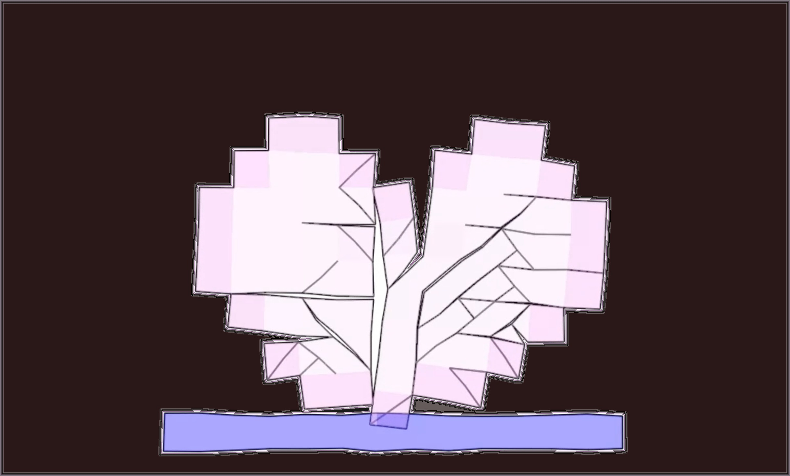

Diyang Zhang

I am currently a Master student at Dartmouth College, majoring in Computer Science with concentration in Digital Arts, advised by Professor Bo Zhu in Visual Computing Lab.
Before coming to Dartmouth, I received my Bachelor of Science with First-Class Honors in Mathematics and Computer Science from McGill University. It was my fortune to work with Professor Paul Kry and Professor Jean-Christophe Nave on numerical method for physics-based simulation during my undergraduate studies.
My research interests lie in computer graphics, especially in physics-based animation, around which I would like to explore more topics on computational physics, machine learning and visual scene understanding.[CV]
Publications

Fluid Simulation on Neural Flow Maps
ACM Transactions on Graphics (SIGGRAPH Asia 2023)
Best Paper Award
Yitong Deng, Hong-Xing Yu, Diyang Zhang, Jiajun Wu, and Bo Zhu
[paper] [video] [project page]
ACM Transactions on Graphics (SIGGRAPH Asia 2023)
Best Paper Award
Yitong Deng, Hong-Xing Yu, Diyang Zhang, Jiajun Wu, and Bo Zhu
[paper] [video] [project page]
Projects
A Fourier-Spectral Method For Fire and Flame Simulation
Undergraduate Honors Research Project, advised by Prof. Jean-Christophe Nave
Implement numerical method for fire and smoke simulation based on Fourier spectral approximations of the Navier-Stokes equations, with volume penalization approach to add obstacles and flame sources. [Midterm_Report]
Undergraduate Honors Research Project, advised by Prof. Jean-Christophe Nave
Implement numerical method for fire and smoke simulation based on Fourier spectral approximations of the Navier-Stokes equations, with volume penalization approach to add obstacles and flame sources. [Midterm_Report]
A Review of Second Order Advection-Reflection Fluid Solver
Undergraduate Honors Research Project, advised by Prof. Paul Kry
Replicate the simulation result using advection-reflection method, and proceed to evaluate and compare the level of detail-preservation by implementing other classical fluid solvers previously employed. [Video]
Undergraduate Honors Research Project, advised by Prof. Paul Kry
Replicate the simulation result using advection-reflection method, and proceed to evaluate and compare the level of detail-preservation by implementing other classical fluid solvers previously employed. [Video]
Selected Coursework

A Monte-Carlo Ray Tracer
CS287 Rendering Algorithm, Dartmouth College
A monte-carlo ray tracer which supports features including: volumetric path tracing, photon mapping, microfacet anisotropic BRDF, environment map with importance sampling, etc. [Final_Report]
CS287 Rendering Algorithm, Dartmouth College
A monte-carlo ray tracer which supports features including: volumetric path tracing, photon mapping, microfacet anisotropic BRDF, environment map with importance sampling, etc. [Final_Report]

Collections of Mini Physically-Based Animations
Comp557/559 Computer Graphics/Animation, McGill University
Mini projects on computer graphics and physically-based animation including: collision system, finite-element fracture simulation, geodesics in heat, depth-of-field camera, glsl rigid-body transformations, etc. [Video]
Comp557/559 Computer Graphics/Animation, McGill University
Mini projects on computer graphics and physically-based animation including: collision system, finite-element fracture simulation, geodesics in heat, depth-of-field camera, glsl rigid-body transformations, etc. [Video]